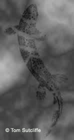
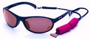

ティップス
ニュージーランド ティップス集 鱒を見つける方法、居付き場の見分け方
ニュージーランドの釣りならではの、サイトフィッシングについて調べていたら、Bish & Fish From New Zealand というサイトにあった、Spotting Trout in Their Lies との記事を発見した。一読して感銘を受けたので、和訳と転載の許可を頂こうと作者の Tony Bishop さんにメールを書いたらその日のうちに返信があって、快諾して下さった。トニーさんは Bish という愛称で広く親しまれている釣りの名人で、著書も多く、上記のサイトにはたくさんの有益な記事が載っている。以下は Spotting Trout in Their Lies の拙訳である。記事のタイトルにある、"Lies" という単語の和訳が難しく、色々と調べたのだが、アメリカのフライフィッシング用具メーカー：Redington のサイトにあったフライフィッシング用語集には、
Lie: The areas in a river or lake where fish hang out, optimum lies are typically out of the main current, present cover from predators or provide a good source of insects and other food.
ライ：川や湖において魚がたむろするエリア、最適なライは通常主流から外れており、外敵から身を守る遮蔽物があったり、昆虫や他の食べ物が豊富に供給される場所である。 と解説されていたので、「居着き場」と訳した次第。以下が本文。
トラウトフィッシングにおいて、鱒を捜し、そして見つけ出し、あなたのフライやルアーで誘惑しようとすることよりもエキサイティングなことは、他にはおそらく無いであろう。しかし、魚を見つけることは思ったよりも難しいものである。
私は、釣りの最中に初めて鱒の姿を見た時のことを、今でも鮮やかに思い出すことができる。私はニュージーランドのクライストチャーチの中心部にあるエイボン川で釣っていて、その時９歳か１０歳だった。いつものように何も釣れず、ほとんど今後一切鱒釣りをやめてしまおうかという時だった。この日はしかし、一人の大人が岸沿いに歩いてきて止まり、立ち話の中で私に、川の中心に居る鱒が見えるかどうかと訊ねてきた。私には鱒は見えなかったので、彼は手助けしてあげようと言ってくれた。
ゆっくりと、そして注意深く彼は私の視野を川底の特徴へと向け、着実に魚へと誘導していった。まだ私には魚が見えなかったので、本当にそこに魚が居るのか疑わしく思えてきた。
「魚を探すのをやめてごらん」
新しく私の師匠になった彼がアドバイスしてくれた。
「見てごらん、君にはあそこの藻の房のすぐ右側の暗い染みが見えるかい？」
そこを見ると、私には見えた。そしてその染みが少しだけ、数センチほど上流へ動いたことに気づいた。そして何か本当に魔法のようなことが起こった。その染みが鱒の姿へと具現化したのだ。他に説明のしようも無い。最初はただの暗い色の染みだったものが、やがて蝶がその羽を広げるかのように、そこに鱒が居たのだ。

「別の鱒が３ヤード（そう、ずっと昔はヤードで表した）ほど最初の鱒の前に居るよ」
師匠がアドバイスしてくれた。今では私も何を探せば良いかがわかり、すぐにその鱒を見つけた。
鱒を捜さないこと
魚が居るかもしれない、あるいは居そうな水の中で魚を見つけるコツは、魚の姿を捜さないことである。魚類は数千年もの歳月をかけて、彼らの姿を外敵：捕食者から見つかりにくいようにするために準備してきた。彼らはそれに成功した。だから魚を見つけることは難しい。それよりも、魚が居るというサイン、すなわちゆらめきなどの動き、川底で動く影、あるいは魚が餌を食べるときに白くフラッシュする口などを捜した方がずっと簡単なのである。探索の範囲を、鱒が居そうな、居るかもしれない所に集中し、一度川底とその特徴を把握したら、それに対しての何らかの変化や動きを捜すのである。動きを捜し出すことによって、ひとたび魚の位置が「確定」されたならば、たとえ眼を逸らしたり移動したりした後でも、何度も何度も魚を見つけることが容易になるのは驚くべきことである。
淵や湖（あるいは長い瀬）においては、多くの魚は食べ物を求めて定期的なパターンで巡回したりパトロールするだろう。もしあなたが動いている魚を見つけたら、じっと静かに身動きせず（必要ならまばたき程度は許される）、そして最初に魚を見たエリアに集中することである。極めて頻繁に鱒はこの同じエリアに戻って来るであろう。
仮にあなたが、周囲の水域全てのエリアで魚を捜そうとすれば、持ち時間の90%を無駄にすることだろう。
もしあなたがスキルアップして、魚の居場所を判別することに習熟したならば、魚を見つけ出すことはずっと容易になろう。なぜならあなたは見るべき範囲を狭めるからである。
魚が居着いていそうな水域のうちの10%を捜せば、成功率ははるかに高くなる。
魚を見つけ出すためのもう一つのヒントは、高い所から捜すことである。視線の角度が急になるほど、水面からの反射のまぶしさが軽減される。もし可能であれば、十分高い有利な位置から魚を捜せばより効果的である。そして水面のレベルまで降りて行った時に目印となるポイントを見つけておく。それからあなたが見つけ出した魚を釣るポジションまで移動するのである。しかしこの方法は諸刃の剣である。あなたの立ち位置が水面に近ければ魚に見つかりにくいが、水面より高くなれば魚から見つかり易くなってしまう。
あなたと魚との間に、立木や藪、大岩などの自然物を常に存在させるように努めることは良い習慣である。姿勢を低くすることもまた、あなたを助けてくれる。私はたびたび手と膝をついて四つん這いになって魚を捜したり、キャストするポジションまで移動する。（まぁ、昔は匍匐前進までしたものだが、近頃ではそこまでやるチャンスは無い。）
もしあなたが友人と釣っているのなら、交代しながら一人が魚を見つけて、もう一人が釣るというのは優れた戦術である。
１尾の鱒を見つけても、すぐに捜索を止めないこと！
私は、たとえあなたが１尾の魚を見つけ出していたとしても、その水域を完全に調べ続けるということがどれだけ重要かということを単純に強調することはできない。
私は、かつて私が幾度となく魚を見つけてからすぐにキャスティングポジションまで移動してしまったか、ということを白状するとあまりにも恥ずかしくなる。その移動プロセスの最中に、最初に見つけた魚と私との間で、数尾の魚をあやうく踏みつけそうになった。私が見逃した魚は、釣り人が何かヘマをやらかした時にどこかへ逸走して、最初の魚を脅かしてしまう。見逃した魚が最初のやつよりはるかに大きかったことの回数は考えるのもいやだ。だから私は思い出さないようにしている。落ち込むだけだから。
魚を見つけるために偏光サングラスを使おう
あなたが鱒を見つけ出そうと試みるならば、偏光サングラスか、あなたが普段使っている眼鏡に付ける偏光クリップオンをただちに買い求める必要がある。偏光サングラス無しで水中を見ることは、最良の場合でも困難であり、最悪の場合不可能である。

レンズの色は、魚を見つける際に実に重大な違いをもたらす。オールラウンドな性能を発揮するのに最良なのは、アンバー（琥珀色）もしくはイエローのレンズであり、ほとんどのシチュエーションをカバーする。非常に晴れて明るい日には、ローズ（薔薇色）のサングラスがとても良い。（何人の人たちは、私が常にローズカラーのサングラスをかけていることに気づいている！） やや曇りがちの日、それから完全に曇ってしまったような日には、イエローのレンズが最良である。日差しが急に変わる日、すなわち雲に太陽が隠れたり出たりする日なら、アンバー色がベストである。イエローの色調のサングラスは、タンニンで少し茶色がかった水域においても良い性能を発揮する。
しかし、レンズカラーの選択のキーポイントは、以下の２つの要因を認識することである。
- 私たちのほとんどは、他人とは違った色の見え方をする。だから、あなた自身にとって最良の結果をもたらすレンズカラーを選ぶべきである。
- レンズカラー選択のキーポイントは、水中にある物体に対して最大のコントラストをもたらしてくれる色を選ぶことにある。鱒の動きを感知しようと試みる時には、コントラストが強まるのでとても助かる。
- もしも可能であれば、店頭でねだったりお願いしたり借りたりして、購入する前に異なる色のサングラスを釣り場で試用してみること。
私は常に３種の偏光サングラス（あるいはレンズ交換式のサングラス）を携帯している、アンバー、イエロー、そしてもちろんローズカラーである。私は、状況に応じて、あるいは水がタンニンで色づいていると知っている時に持ち出す他の色のサングラスも持っている。この頃では、横からの光を遮るタイプのスペシャル偏光サングラスや広角のタイプがとても安い。
実際のところ、私は２セットの350.00NZドルのモデルと、プレゼントで頂いて頻繁に使っている29.95NZドルのサングラスとの間に、ほんの少ししか違いが無いことに気づいた。しかし次のことについても言及しなければならないが、釣り場で長い一日を終えた後、特に眩しいコンディションの下では、私の眼は安いサングラスを掛けていた時には、より高価なサングラスを掛けていた時よりもずっと疲れて痛みを覚えた。
高価な偏光サングラスはおそらくあなたの眼に良いであろうし、より長く使えるだろう。仮にあなたが私のやったように、プレゼントされた２セットのサングラスの上に座ったりしなければ。私は現在、あまり高価で無いモデルを使っており、決してその上に座ったりしないし、無くしたり引っ掻いて傷つけたりもしない。－可笑しなことだ！
もっと奇妙なことには、私の安価な３セットのサングラスは、ぶつけられたりイカレたり踏みつけられたり無くしたりしないだけでなく、増殖していることだ。私は今４セットを持っている。ー実に奇妙だ。
鱒の見つけ方について、もう一つの秘訣
ある時私は、とてもフライフィッシングに熟達したアメリカ人の客をガイドしていた。私たちは朝のうち、うまく魚を見つけることができ、その鱒を狙って釣った。日中になると、私たちが何かの理由で休憩をとった時にはいつも、彼が太陽の方向から顔を逸らして数分間サングラスを外していることに気づいた。実際、私たちが魚の居そうな場所にアプローチする時には、しばしば彼が少しの間サングラスを外し、再び魚を捜すときにかけ直すことにも気づいた。
このことについて訊いてみると彼は、時が経つにつれて私たちの眼は、サングラスによって光線の特性が変化して届くことに慣れて調整するようになるためだと理論立てて述べた。彼は定期的にサングラスを外すことによって、最初に偏光サングラスを掛けた時に高められるコントラスト察知能力が、再び活性化されると信じていた。
そこで私も試してみると、その方法は上手くいった。そして今でも私にとって役立っている。
キャスティングの時も常にサングラスを掛けていること
私はあるクリスマス休暇に、オタマンガカウ湖をアルミボートに乗って釣っていた。とても見事なブラウンを１尾と、もう１尾良い型のレインボーを釣り上げていたが、やがて状況は静かになってしまった。私は偏光サングラスを外し、６メートルのリーダーの端に新しいニンフを結ぶため、老眼鏡をかけた。
オタマンガカウ湖では極めて良くあることだったが、私がキャストの準備をしている背後から、15ノット（秒速8メートル）ほどの強風が吹き付けていた。その時に至るまで、それまで使っていた長いリーダーにもかかわらず、強風はあまり多くの問題を引き起こしていなかったので、私はブン投げた。
私は帽子にフライラインが当たるのを感じ、音を聞き、すぐに続いて眼の真下にドスンと来た。私は最悪の事態を恐れ、それから眼を開けて確証を得た。さっき結んだニンフが眼の近くの顔、ほとんど眼の中に刺さっているのがはっきりと見えた。事実、ニンフは睫毛のすぐ下、下側のまぶたから数ミリ高い位置に刺さっており、もう少しで眼球というところだった。
非常に幸運にも、しかし非常に愚かであった。私がするべきことは、キャストの前に偏光サングラスを掛けることだった。些細なことだが覚えておくこと。これを忘れるととてもひどい事態になる可能性がある。
そばにいたガイドの助けを借りて、フォーセップを使ってフックの上側のベンドを掴み、フックのアイを押さえつけ、手首をクイッと返すとフックは少々ドラマチックなシーンと共にすぐに取り除かれた。
フライライン・リーダーの先端に結ばれたフライは、とても速いスピードになり（ある人の推定によれば、時速200km程にも）、そして特に初心者のうちは、１回ないし５回はあなたに打ち当たる。これはフライフィッシングというスポーツでは避けられない危険要因である。多くの場合、あなたの帽子か背中に当たるだろう。しかし顔面を強打されることもまれなことでは無い。あなたの眼を守ることは本当に必要なことである。フライフィッシングをする時には常に眼鏡かサングラスを掛けるべきである。
私の書いた記事、「偏光グラスを掛け替える」と「サイトフィッシングのコツ」も参考までにどうぞ。
ティップス 目次へ
サイトマップ
ホームへ
お問い合わせ